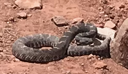
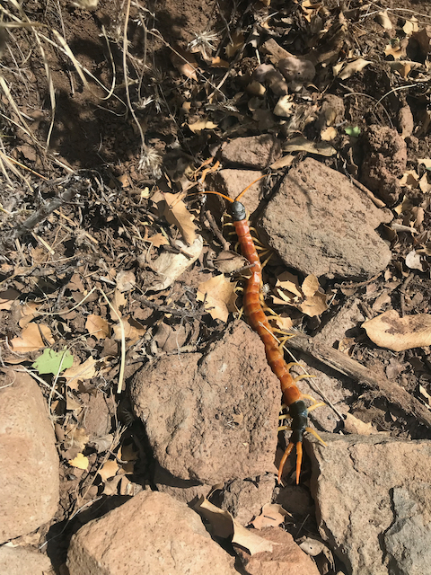
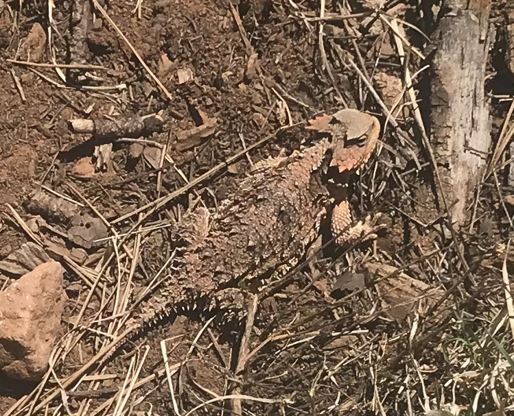

Rigged!
The Cocodona 250 was rigged1 in my favor, and thus I won. At least with respect to seeing venomous animals. Unfortunately, I currently only have a photo of two of the trifecta.
Initially, I chose to have my phone off rather than in airplane mode. It was only when I saw the gila monster that I realized I might actually see something others wouldn't. I started powering up my phone, but the monster had left by the time I could take a picture. Luckily, this was on the first day, so there were other runners nearby. I pointed the gila monster out to at least one who took a picture. Maybe someday I'll see it. I didn't, however, think to get that runner's name or bib number.
If you took a photo of a gila monster on the first day—especially if il mostro was pointed out to you by a guy too stupid to wear a hat in the sun— please contact me.
By the second day, I was running solo mostly. Coming off of Mount Mingus, there's an interminable trail that is normally fairly runnable, but had me walking due to a "minor" foot injury. After miles of not seeing anyone,I saw three participants off the trail and initially, I couldn't figure out what they were doing. The trail itself was level, but the land was sloped on either side of it. They were uphill at an awkward, but not dangerous angle. I thought perhaps one was taking a poop and the other two were standing guard, but that didn't make a lot of sense.
"Caution!"
"What?"
"Snake!"
"What kind of snake?"
"Rattler!"
"What kind of rattler?"
"I don't know!?!"
"Where?"
"It's a big snake, next to that big rock and it's not moving!"

It took me a little while to find the medium sized snake next to the small rock. Furthermore, being tired, I didn't process "it's not moving" as "it's standing it's ground"; I was thinking more like "perhaps it's dead." Nope. It was a healthy adult Mojave rattler. I got out my phone, got close enough to get a low-resolution picture, spoke calmly to it, then walked widely around it. I stayed on the trail, but I believe I was well outside its striking distance.
"What the fuck? That snake was threatening us. Why wasn't it threatening him?"
"Maybe he's a snake whisperer"
Heh. I was tempted to shout back that it was OK, because although I'm young, I was actually doing this year's Cocodona 250 sober and rattlesnakes bite young drunk men.

The following day I was hiking up the penultimate big climb and I saw a centipede. Although I know the difference between diamondback, timber and Mojave rattlers, I didn't know much about various centipedes. I had a vague recollection of seeing a video of someone getting bitten by one, but I got a photo and video of the large colorful one I saw. Sure enough, it was a giant desert centipede, which was indeed the species that Coyote Peterson had bite him.

I also saw a horned toad. They're common, and they're also not venomous, but they can squirt blood from their eyes. It's also amazing how camouflaged they are.
FTR, I did not hear of any bites or stings, nor did I see anyone "attacked" by teddy bear cholla, but there was some teddy bear cholla out there on the first day. I've run the Javelina Jundred eleven times and I'd guess about a third of the times I've seen someone with at least a few balls stuck to them. Once again, Coyote Peterson illustrates.
I've done a bunch of running in the Arizona and New Mexico desert and I've seen rattlesnakes (mostly diamondbacks) before. I don't recall seeing a gila monster, but I do have a poor memory. I have seen centipedes every once in a while, but there's no fucking way I'd see all three in a single race if it weren't rigged. Come on! I'm not stupid!
Pretty much every online poker site is accused of being juiced, where they rig the game in favor of someone or other for … reasons. I actually play on the site I created and I play well enough that I have very good statistics. The people I play with know (I think!) that I’d never rig it or cheat in any way, but they will write “rigged!” when someone gets especially lucky, especially if that someone is I.